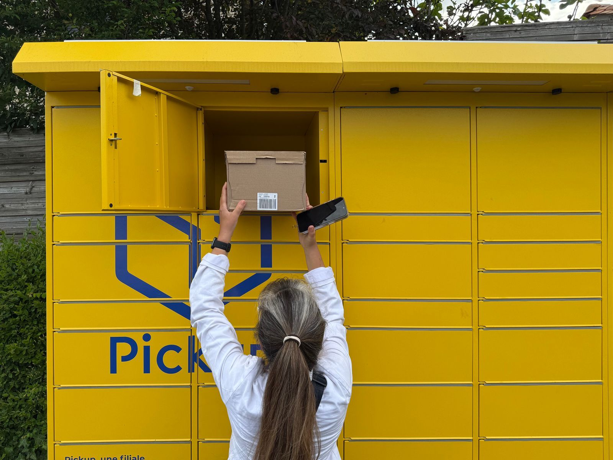
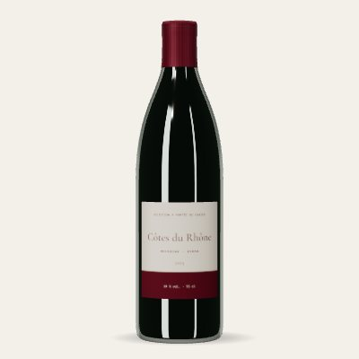
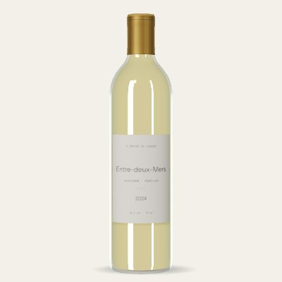
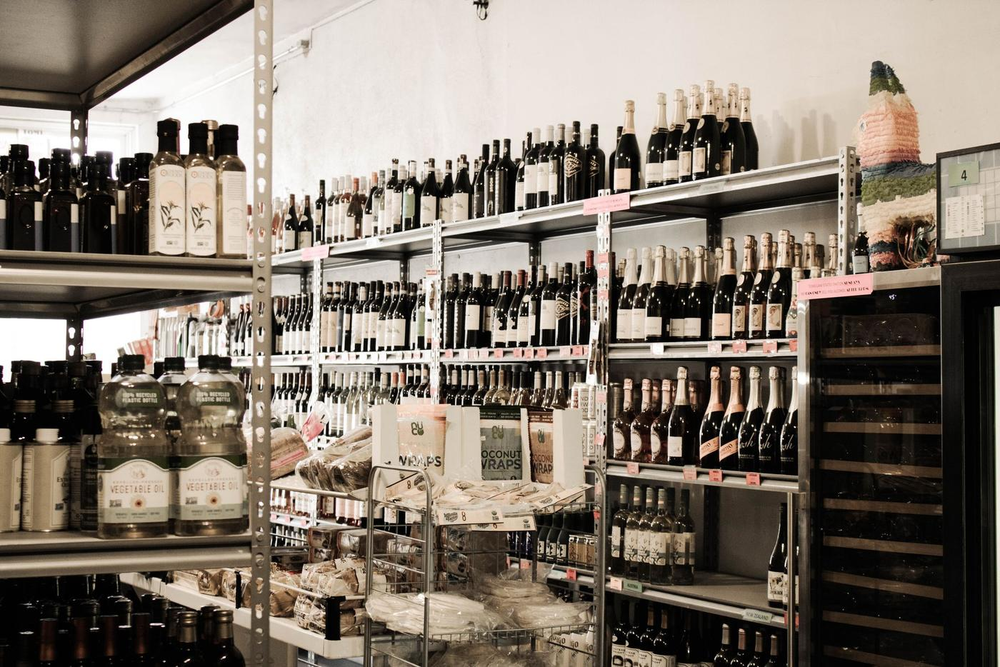
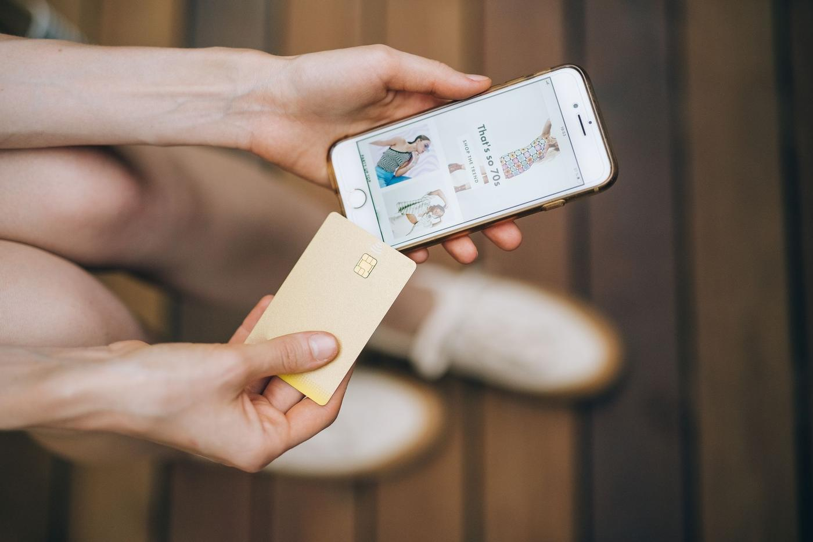
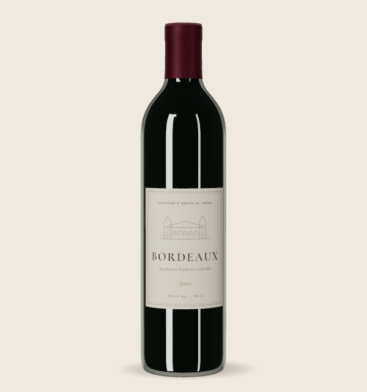
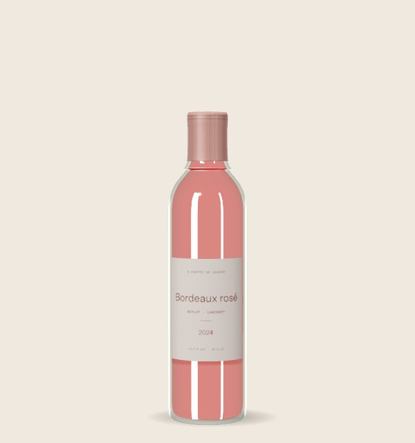
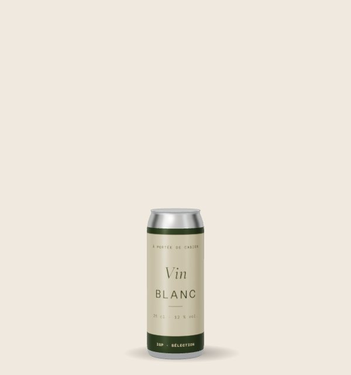
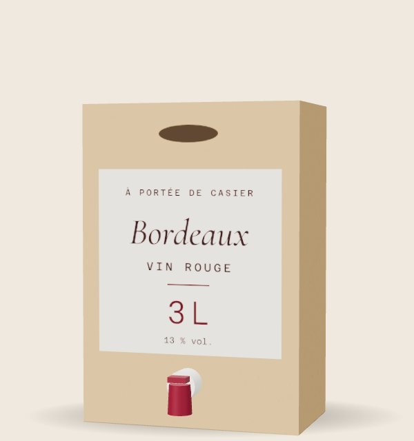
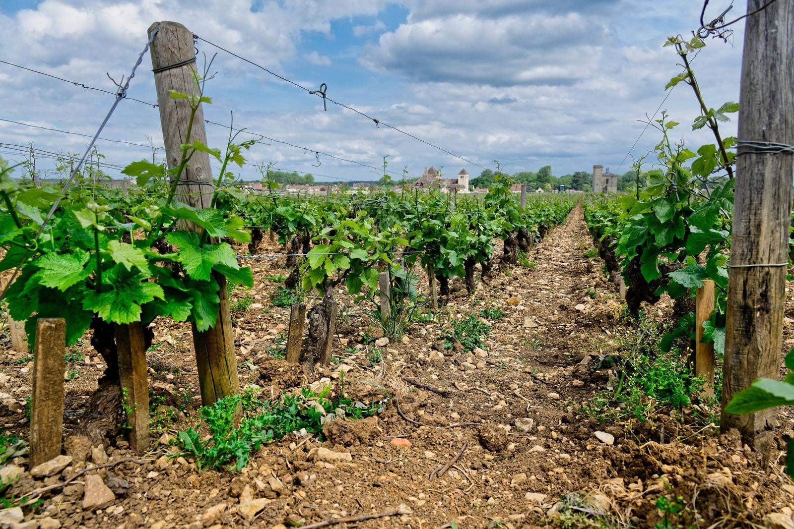

Fournit le vin
Il nous vend son vin au tarif professionnel, comme à un caviste. Il ne vend rien au casier.
Hors du casierLa vente d'alcool est interdite aux mineurs de moins de 18 ans · Projet d'étude, sans vente réelle

Chaque réponse est détaillée plus bas sur cette page.
Nous achetons les vins aux domaines et aux caves coopératives, puis nous les revendons sous notre propre licence.
La licenceSur les trajets de la cible, avec un retrait de 8 h à 22 h. Jamais dans une station-service ni dans un équipement sportif.
Les emplacementsLe prix public d'un caviste, sans supplément pour le service.
Le prixCommande en ligne, preuve de majorité, paiement, puis retrait avec un code aux horaires autorisés.
Le parcoursLa loi demande une licence à celui qui vend, pas à celui qui prête un emplacement.S16 Le rôle de chacun :
Il nous vend son vin au tarif professionnel, comme à un caviste. Il ne vend rien au casier.
Hors du casierContre un loyer ou une commission. Il ne vend pas notre vin : le casier ne lui demande pas de licence.S16
Pas de licence pour le casierMajeur, il prouve son âge, paie en ligne, puis ouvre le casier avec un code.
18 ans ou plusLe choix part de la façon dont la cible vit à Bordeaux, puis de trois critères. Deux pistes ont été écartées.
Recensement 2023, commune de Bordeaux.
Beaucoup de Bordelais vivent en appartement et sans voiture.S120 Or les citadins en appartement privilégient déjà les points relais et les consignes.S63 Le casier doit donc être à pied ou en tram du domicile ou du trajet.
À Bordeaux, le retrait est possible de 8 h à 22 h, la limite fixée en Gironde.S119 Avant chaque nouvelle ville, lire les arrêtés locaux : Aix-en-Provence interdit la vente à emporter dès 21 hS78, Montpellier de 22 h à 6 h dans neuf secteurs.S106
L'hôte prête l'emplacement contre un loyer ou une commission. S'il vendait lui-même du vin, le casier lui ferait concurrence : il n'aurait aucun intérêt à l'accueillir.
Ni supplément pour le service, ni prix de grande surface. Les repères ci-dessous situent ce choix.
Prix des cavistes : prix médians en rayon relevés en 2021-2022. Budget déclaré : tous âges confondus.


Des vins achetés auprès de domaines et de caves coopératives, présentés par leur origine et leur style.

Origine, style, mode d'élaboration : de quoi choisir sans être perdu devant un mur de bouteilles.
Le casier propose une nouvelle façon d'acheter ; proposer aussi une autre façon de consommer est une piste. Les vins désalcoolisés peuvent porter le nom de vinS13 et pèsent encore moins de 1 % des ventes.S11

Pour compenser ce que le casier supprime : l'échange avec un caviste, avant de payer.
Un format n'entre dans le casier que s'il est autorisé pour le vin, s'il tient dans une case et s'il sert la cible.

Le format de référence de la sélection. Debout, une bouteille mesure de 296 à 329 mm selon le modèleS99 : les cases doivent faire au moins 33 cm de haut.

Un volume autorisé pour le vinS95, pour goûter une référence sans prendre une bouteille entière. Revers : un panier plus petit relève le seuil de rentabilité.

Seule taille de canette possible pour un vin tranquille : le 33 cl n'est pas autoriséS95. Les moins de 35 ans connaissent la canette, mais l'offre française vise surtout l'export et un producteur doit en lancer de 12 000 à 100 000S96. À proposer si un partenaire en produit déjà.

45 % des adultes achètent du vin en BIB, mais 49 % de ceux qui n'en achètent pas jugent le volume inadapté à leur consommationS98. Il demanderait aussi des cases plus larges que celles des bouteilles.
Rendus 3D à la même échelle, étiquettes fictives.
Cave O Vin louait ses machines aux producteurs.S10 Nous vendons nous-mêmes une sélection courte, sous notre propre licence.
Nous partons des usages des moins de 35 ans : l'achat en ligneS24, le choix guidé et un conseil avant l'achat.

À condition que le site ne soit pas principalement destiné à la jeunesse et que la publicité ne soit ni intrusive ni interstitielle (art. L3323-2, 9°).S68 Viser les 18-34 ans, oui ; s'adresser à des mineurs, jamais.
Origine, appellation, producteur, élaboration, couleur, arômes, conditions de vente, et le message sanitaire (art. L3323-4).S69 La justice a déjà sanctionné des affiches de vin qui sortaient de ce cadre.S93
Parler de la région, du savoir-faire et de l'histoire d'un vin sous signe de qualité n'est pas considéré comme de la publicité (art. L3323-3-1).S68
Le concept ne cherche pas à contourner la loi : il s'appuie sur ce qu'elle autorise expressément, la vente à distance, sous notre propre licence et au prix d'un caviste, dans des lieux qu'elle n'exclut pas.
Cliquez ou touchez la cave pour ouvrir sa porte.

L'abus d'alcool est dangereux pour la santé. À consommer avec modération.